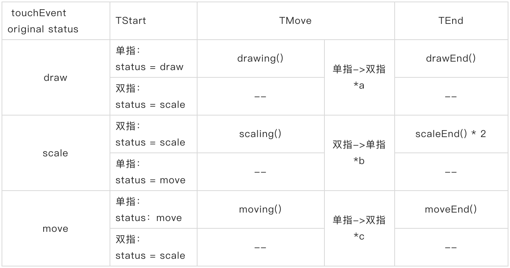
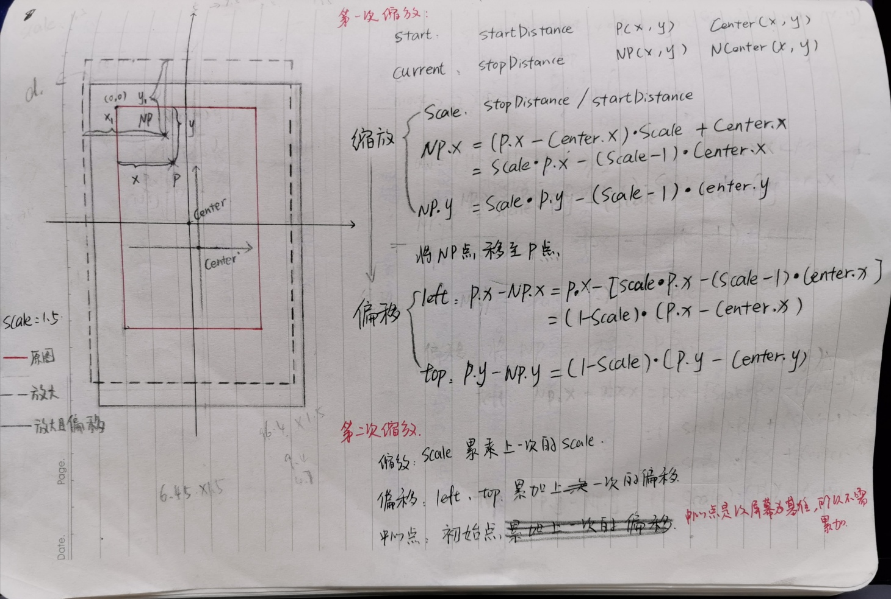

功能点梳理
-
生成图片
svg-> canvas ->img -
旋转
svg(resize)
svg_image(rotate) -
涂鸦
- 涂鸦-原倍数
target: svg
EventListener: touchStart-touchMove-touchEnd
touches: 1-1-1
operate: [‘draw’] -> ‘draw’ - 涂鸦-非原倍数
- 撤回
delete the last path node
cut down the drawCount
- 涂鸦-原倍数
-
缩放
- 缩小放大
target: svg
EventListener: touchStart-touchMove-touchEnd
touches: 2-2-1
operate: [‘draw’, ‘scale’, ‘move’, ‘drag’] -> ‘scale’ - 移动
target: svg
EventListener: touchStart-touchMove-touchEnd
touches: 1-1-1
operate: [‘scale’, ‘move’] -> ‘move’
- 缩小放大
-
文字
- 文字-创建
- 文字-再编辑
- 文字-删除
- 文字-拖拽
target: textBgBlock*Id
EventListener: touchStart-touchMove-touchEnd
touches: 1-1-1
operate: UnChange
-
置空
-
返回
-
完成
touch 事件梳理

*手式切换会触发的事件流注释：TouchEvent(touches)
a. TStart(1)->TMove(1)->TStart(2)->TMove(2) -> TEnd * 2;
b. TStart(2)->TMove(2)->TEnd _ 1 ->TMove(1) -> TEnd _ 1;
c. TStart(1)->TMove(1)->TStart(2)->TMove(2) -> TEnd * 2;
具体实现
缩放
判定当前操作为缩放的条件：event.target 是 svg，event.touches.length > 2;
touchStart:
- startDistance：双指起始距离
- centerPoint：svg 中心点坐标
- currentOperate：‘scale’
touchMove:
- oStopDistance: move 时当前双指距离
- oScale: move 时双指当前缩放比例（oStopDistance / startDistance）
- lastScale: 手指离开时的最后缩放比例，全局变量，默认为 1
- currentScale: 当前缩放比例（lastScale * oScale）
- oOffsetX, oOffsetY：svg 在 x 或 y 轴方向的偏移量
- maxOffsetX, maxOffsetX: svg 在 x 或 y 轴方向的最大偏移量
- scale: 双指操作时的实时缩放比例 (nowScale)
- offsetX, offsetY: move 时当前的偏移量(offsetX, offsetY)
【实现思路】
控制 scale 的同时处理 translate，达到视觉上放大的中心点在两指之间。
-
缩放比例累乘。
-
判断缩放比例范围(绝对值范围：(1 ~ maxScale-0.2)；maxScale：todo 暂定为 3 )。
-
计算 x、y 轴方向的偏移量(oOffsetX, oOffsetY)。
-
计算 x、y 轴方向的最大偏移量(maxOffsetX, maxOffsetY)。
-
在最大偏移量的范围内，确认 x、y 轴方向的偏移量。
-
设置 svg 的 attribute: transform: scale(${currentScale}) translate(${oOffsetX}, ${oOffsetY});。
【更正】：svg中transform对Android6一下以及ios12一下都不兼容，所以将svg上的transform变换迁移到svg的父容器上，即 设置id为mainContainer的节点style: tranform: scale(${currentScale}) translate(${oOffsetX}px, ${oOffsetY}px);。 -
更新缩放相关变量。
1
2
3
4
5
6
7
8
9
10
11
12
13
14
15
16
17
18
19
20
21
22
23
24setScaleAnimation(oScale) {
let currentScale = lastScale * oScale;
if (Math.abs(currentScale) > 1 && Math.abs(currentScale) < this.state.maxScale - 0.2) {
let oOffsetX =
oScale === 1 ? lastTranslate.x : ((1 - currentScale) * (origin.x - centerPoint.x) + lastTranslate.x) / currentScale;
let oOffsetY =
oScale === 1 ? lastTranslate.y : ((1 - currentScale) * (origin.y - centerPoint.y) + lastTranslate.y) / currentScale;
let maxOffsetX =
(Math.abs(this.state.svgSize.width * lastScale - this.state.wrapSize.width) / 2 / currentScale) *
(oOffsetX / Math.abs(oOffsetX));
let maxOffsetY =
(Math.abs(this.state.svgSize.height * lastScale - this.state.wrapSize.height) / 2 / currentScale) *
(oOffsetY / Math.abs(oOffsetY));
oOffsetY = Math.abs(oOffsetY) > Math.abs(maxOffsetY) ? maxOffsetY : oOffsetY;
oOffsetX = Math.abs(oOffsetX) > Math.abs(maxOffsetX) ? maxOffsetX : oOffsetX;
currentTranslate = this.getPoint2D(oOffsetX, oOffsetY);
document
.getElementById('mainContainer')
.setAttribute('style',`transform: scale(${currentScale}) translate(${oOffsetX}, ${oOffsetY})`);
scale = currentScale;
offsetX = oOffsetX;
offsetY = oOffsetY;
}
}【图解】
注意：与 css 中不同的是，在 svg 中的 translate 是不受 scale 影响的，所以在计算偏移时，需要将偏移量还原一个缩放比例，沿用 canvas 图，思路是一致的，但是图解中没有还原缩放比例，具体可以看代码。

touchEnd：
更新本次缩放相关参数：
lastScale = scale;
lastTranslate = currentTranslate;
移动
判定当前操作为移动的条件：
- event.target 是 svg；
- event.touches.length = 1；
- 从 start 到 move 的时间间隔大于 200ms；
- currentOperate 的值是’move’或’scale’。
touchStart:
- moveStartStamp: 移动操作的起始时间。
- moveStart：移动时的起始坐标，即手指落屏的坐标点(screenX, screenY)。
- currentOperate： ‘scale’ -> ‘move’。
touchMove:
moveStartStamp = 0;
计算并更新 svg 的 attribute，transform: translate；
【具体实现】
1 | moving(e) { |
touchEnd:
更新 lastTranslate: lastTranslate = this.getPoint2D(offsetX, offsetY);
涂鸦
判定当前操作为涂鸦的条件：
- event.target 是 svg;
- event.touches.length = 1；
- currentOperate 的值是’draw’。
touchStart:
- oTouchStart: 手指第一下落屏的坐标；
- oDrawStartStamp：手指第一下落屏的时间；
- strokeWidth: 涂鸦画笔的粗细，(5/scale).tostring();
- currentPath: 创建一个 ‘path’ 节点， 并设置一系列属性，例如 class、stroke-linejoin、stroke-width、stroke-opacity、stroke、fill、fill-opacity、pointer-events 等；
- moveTo: path 标签的 d 属性中的 “M” 值('M ’ + oTouchStart.x + ‘,’ + oTouchStart.y);
- currentPathdTo: currentPathdTo: path 标签的 d 属性 (moveTo);
为 currentPath 设置 d 属性，并将 currentPath 添加到 svg 中
更新 state 中的 touchStart、drawStartStamp
【具体实现】
1 | let p_x = (e.touches[0].pageX - rect.left) / scale; |
touchMove
- x: 手指相对 svg 偏移、缩放后的 x 坐标;
- y: 手指相对 svg 偏移、缩放后的 y 坐标;
- LineTo: 当前绘制的 path 标签中 d 属性的 “L” 值。拼接在 M 值后面('L ’ + x + ‘,’ + y);
- currentPathdTo: 拼接“LineTo” ( ’ ’ + LineTo);
将 currentPathdTo 的值更新到 svg 的属性 d 中。
touchEnd:
- 比较当前时间与 drawStartStamp 的时间差，大于 200 则算为一次涂鸦操作；
- 清空临时存储 path“d”属性的变量值 currentPathdTo；
- 更新 currentPathdTo、drawStartStamp、drawCount;
- 禁用旋转功能 rotateForbidden => true;
文字拖拽
判定当前为文字拖拽操作的条件：event.target 是 svg;
touchStart:
dragStartStamp: 手指第一下落在文字上的时间戳；
pathDis: 手指落下时的位置相对文字左上角的偏移量；
touchMove:
- 判断当前时间戳与 dragStartStamp 的差值是否大于 299；
- 判断当前是否存在文字被选中，有则取消选择；
- 判断当前的 scale 是否为 1，若不等于 1 则对缩放移动等状态进行重置；
- 计算文字相对与左上角的偏移量(x,y);
a. x: e.touches[0].pageX - this.state.pathDis.x - svgDom.getBoundingClientRect().left;
b. y: e.touches[0].pageY - this.state.pathDis.y - svgDom.getBoundingClientRect().top; - 判断偏移量是否超出边界(xMax, yMax), 超出则直接将最小值(0,0)或最大值赋值给(x,y);
a. xMax: this.state.svgSize.width - e.target.getBoundingClientRect().width;
b. yMax: this.state.svgSize.height - e.target.getBoundingClientRect().height; - 获取当前被拖拽的文字 id，并通过 getElementById 获取该对象，更新该对象及对象内部每一行文字的两个 attribute：x、y，需要加上边距偏移；
【具体实现】
1 | dragging(e) { |
touchEnd:
当前时间戳与 dragStartStamp 的差值大于 299，更新 annotationList 中对应的 annotation 对象定位(x, y);
置空
产品逻辑：
- 未批改进入 -> 无置空按钮
- 已批改进入 -> 有置空按钮
- 有操作(旋转、文字、涂鸦)之后出现置空按钮-> 执行置空之后无置空按纽
【具体实现】
- 移除 svg 中所有的涂鸦(path)和文字(g>rect>text)；
- 加载未修改过的图片，加载完成之后根据图片尺寸、手机屏幕尺寸计算 svg 尺寸；
- 清除 svg 上的 transform 属性;
- 初始化所有操作会改变的 state 数据(imgUrl, canClearAll, rotateForbidden, rotateAngle, rotateCount, imgPosition, drawCount)和全局变量(lastScale, lastTranslate, centerPoint, moveStartStamp, startDistance, origin, scale, moveStart)
完成
引入 canvg 插件，将 svg 转为 canvas，再将 canvas 转为 img。svg 转为 canvas 时将图片的尺寸放大 dpr 倍，以保证最后生成图片的清晰度清晰度。
【具体实现】
1 | svgToImg(svgNode) { |